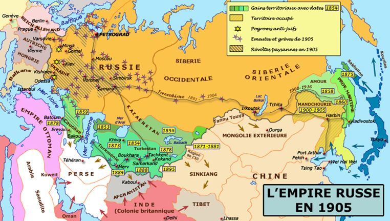
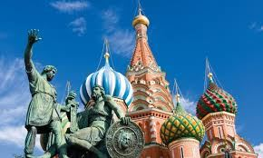
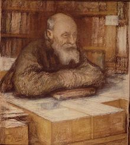

Ces derniers mois, nous avons publié plusieurs articles dans Sans Frontières afin de présenter notre mode de vie communautaire. Si nos écrits vous ont intéressé, sachez que nous venons de publier notre Manifeste des Clans du futur, disponible sur notre site www.lesbrigandes.com. Cet ouvrage, qui résume notre philosophie de vie, offre un exemple d’alternative pratique à la société matérialiste.
Puisque de nouveaux articles sur notre démarche ne sont pas nécessairement utiles, nous allons aborder aujourd’hui un autre sujet : Pourquoi le clan des Brigandes soutient-il la Russie ?
Tout d’abord, il convient de préciser que la Russie n’est pas qu’un pays, mais une civilisation à part entière (rappelons que la Russie est environ trois fois plus grande que l’Europe). La Russie est une civilisation intermédiaire entre l’Asie et l’Europe. Elle n’est donc pas réellement européenne, ce qui lui permet d’observer certains aspects de la modernité occidentale avec un esprit plus critique. Ainsi, la Russie est une grande nation qui, tout en présentant des traits occidentaux, refuse le globalisme venu de l’Ouest.
Si nous devions répondre à la question Pourquoi soutenons-nous la Russie ?, nous le ferions par les points suivants :
- La Russie fait partie des pays défendant une conception du monde multipolaire : le monde est constitué de grands ensembles civilisationnels qui doivent être indépendants les uns des autres. La Russie s’oppose donc au mondialisme américain.
- La Russie est le dernier grand bastion du christianisme, donc de la spiritualité occidentale. L’héritage spirituel de l’Occident est l’une de nos seules protections face au matérialisme de ce même Occident – matérialisme qui s’est étendu à la planète entière.
De plus, le christianisme orthodoxe (et particulièrement l’orthodoxie russe) est la dernière grande religion chrétienne non matérialiste, plaçant encore le Salut au centre de ses préoccupations, tandis que le catholicisme parle d’œcuménisme mondial, d’humanisme ou des bienfaits de l’immigration.
- Autre point important à nos yeux à propos de la religion : l’orthodoxie russe tolère beaucoup plus les recherches dites ésotériques1, car elle n’a jamais connu de système de persécution centralisé et institutionnalisé tel que l’Inquisition de l’Église catholique romaine. On remarque, entre autres, une certaine diversité spirituelle dans les mouvements dits vieux-croyants (ou raskolniki) de l’orthodoxie russe. Un philosophe comme Alexandre Douguine démontre, par exemple, cette ouverture d’esprit : il se définit ouvertement comme gnostique, évoque le Kali Yuga des Hindous, tout en se disant orthodoxe russe. Une telle position est impossible dans le catholicisme romain – sauf, à l’heure actuelle, si c’est pour œuvrer en faveur de l’œcuménisme entre les grandes religions et donc en faveur du mondialisme. L’orthodoxie maintient son identité tout en étant tolérante envers ce qui ne vient pas d’elle, du moment que cela ne menace pas son intégrité. Rappelons que les missionnaires « chrétiens » (les guillemets sont voulus) qui ont parcouru la Terre entière pour imposer leur religion n’étaient pas orthodoxes, mais bien catholiques.
À son apparition, le christianisme s’est greffé sur la tradition gréco-romaine, et la différence entre les catholiques et les orthodoxes s’explique par le fait que les uns se sont rattachés à la Rome mondialiste et les autres à la Grèce décentralisée. Nous avons d’un côté le catholicisme hérité de l’esprit latin impérialiste, et de l’autre l’orthodoxie héritée de l’esprit grec, construit sur une pluralité de systèmes et de philosophies différentes (la Grèce antique n’a d’ailleurs jamais été réellement unifiée avant l’invasion romaine : elle était composée d’un ensemble de cités indépendantes se reconnaissant dans une même culture). Le christianisme catholique est un christianisme romain, alors que le christianisme orthodoxe est un christianisme grec. Ainsi existe-t-il une seule église catholique « une et indivisible » pour le monde entier, mais plusieurs églises orthodoxes indépendantes pour chaque peuple ou ensemble de peuples. Une église portée dès le départ au mondialisme, et d’autres églises qui intègrent la réalité diversifiée du monde. L’une qui donnera naissance à l’Inquisition pour maintenir son unité, et d’autres qui, même si elles persécutèrent certaines minorités spirituelles, intégrèrent néanmoins une plus grande liberté philosophique conformément à l’esprit grec dont elles ont hérité.
- Une partie importante des orthodoxes russes prend encore au sérieux la réalité du Règne de l’Antéchrist qui triomphe dans le globalisme et que la plupart des confessions chrétiennes n’évoquent pas, préférant parler de progrès et d’évolution. Or, d’un point de vue spirituel, notre civilisation apparaît comme une des plus décadentes de l’histoire humaine, et la bénédiction que lui accordent la plupart des grandes religions ne peut que nous faire penser à la falsification propre au règne de l’Antéchrist. La hiérarchie orthodoxe est obligée de jouer le jeu du monde moderne et d’accepter ses fondements mais, cependant, on observe encore dans l’« orthodoxie d’en-bas » une certaine conscience quant à la réalité des forces de l’Antéchrist à l’œuvre derrière la civilisation mondiale.
- La Russie s’oppose à l’oligarchie mondiale ou du moins lui fait partiellement obstacle. Certes, on verra le pouvoir russe collaborer avec certains oligarques, car il est évident qu’une nation telle que la Russie ne peut s’émanciper du système marchand international. Mais contrairement aux pays occidentaux, la Russie de Vladimir Poutine s’est opposée à l’oligarchie qui ne respectait pas les intérêts nationaux, provoquant l’exil ou l’enfermement de certains oligarques.
Ayant défini la caste oligarchique mondiale comme notre ennemi, nous ne pouvons que soutenir la Russie dans son opposition à celle-ci. Notons que ce combat est aujourd’hui aussi celui des Républiques libres du Donbass qui, après avoir proclamé leur indépendance, ont expulsé les oligarques de leurs territoires.
- Le monde russe est plus réceptif aux initiatives environnementales que l’Occident. Nous ne parlons pas ici de projets commerciaux vernis d’écologie pour se donner bonne conscience, tels que les éoliennes ou les panneaux solaires. La Russie a encouragé ces dernières années le développement de la permaculture, de l’agriculture biologique, des éco-villages, des zones de protection de la faune et de la flore, etc. Mais surtout, elle a interdit la production, l’importation et l’exportation de produits OGM sur tout son territoire ! Bannissant les OGM, Poutine a aussi donné pour mission à la Russie de devenir le premier exportateur mondial de produits biologiques. De plus, on sait que le Conseil de Sécurité russe (FISCR) et le président Vladimir Poutine ont directement désigné les vaccins et les produits pharmaceutiques occidentaux comme des dangers pour les peuples. De quoi faire grincer des dents la caste dirigeante de nos pays occidentaux. Pasteur se retourne dans sa tombe, et son mécène Rothschild s’accorde avec Monsanto pour déclarer la guerre à la Russie !
- Alors que l’Occident fait la promotion de la jouissance sans entraves, allant jusqu’à suggérer une possible légalisation de la pédophilie, la Russie tient à préserver une certaine moralité indispensable au climat sain d’une société :
Depuis 2013, la justice russe condamne la propagande homosexuelle faite auprès des mineurs.
Depuis 2012, les sites pédopornographiques ou faisant la promotion de l’usage des drogues ne sont pas accessibles sur le territoire russe.
De manière générale, la société russe met en avant l’image de la famille et critique les sexualités déréglées.
La culture et la mentalité russes ne tolèrent pas qu’on harcèle une femme seule dans la rue, alors que des Occidentaux justifient les viols commis par des immigrés sous le prétexte que « ce serait leur culture » ou « qu’ils n’auraient pas vu de femmes depuis trop longtemps ».
Voici certains aspects qui nous conduisent à soutenir la Russie face à l’Occident. Les raisons sont donc à la fois politiques, sociales, culturelles et spirituelles. Ceci dit, les Russes ne planent pas avec les anges non plus, et comme l’a dit Vladimir Poutine : « Un monde idéal, ça n’existe pas. » En effet, la Russie n’a pas encore gagné la bataille contre Oncle Sam, et elle doit pour cela résoudre de nombreux problèmes internes. Il est intéressant d’en énumérer quelques-uns pour comprendre que les épreuves sont devant et non derrière :
Le libéralisme a explosé de façon sauvage après la chute de l’URSS et l’on constate d’importants dégâts au sein de la société russe : corruption, mafia, capitalisme qui a stimulé le goût prononcé pour l’argent comme en Occident, société de consommation et d’abrutissement dans les grandes villes, etc. De plus, bien qu’étant « jeune » et donc pas très enracinée, l’oligarchie a néanmoins investi les domaines clés et il n’est pas si facile de l’écarter ! Bref, les forces de l’argent ne sont pas à terre…
Il existe en Russie des mouvements d’opposition à Poutine qu’on ne peut négliger, car ceux-ci sont financés et organisés depuis l’Occident, donc dans une perspective de guerre contre la Russie. Et le but de toute guerre n’est ni plus ni moins que l’écrasement de l’ennemi.
L’URSS a quand même laissé derrière elle des dégâts importants, et ce principalement au niveau de l’esprit : 70 ans de matérialisme d’État... Même si l’orthodoxie est restaurée, on ne ravive pas la spiritualité d’un peuple du jour au lendemain.
Une partie des élites russes (notamment dans les milieux scientifiques ou littéraires) est encore influencée par le cosmisme, doctrine basée sur une « mystique du matérialisme et du progrès scientifique » élaborée par le russe Nikolaï Fiodorov au XIXe siècle et qui fut un des fondements de la Révolution bolchevique. Les cosmistes exaltent le matérialisme et présentent le globalisme et le transhumanisme comme la finalité de l’évolution humaine. La mystique russe est ainsi divisée dans un combat entre deux pôles : celui de la Sainte Russie tournée vers le ciel, comme on peut le voir dans l’orthodoxie, et celui, « tourné vers la Terre », de la Russie en tant que précurseur d’un nouvel ordre mondial transhumain. Ces deux pôles se combattent, et chacun tente de s’approprier l’esprit mystique et messianique du Russe. L’un défend la Russie traditionnelle, tandis que l’autre entend la mener à l’anéantissement dans le grand vide technocratique.
Comme partout, les nouvelles générations sont américanisées par la culture globale et, principalement, par le phénomène technologique – premier facteur d’uniformisation mondiale. Ce danger est peut-être le plus grand, car non seulement c’est au final la technologisation du monde qui aura raison des particularismes, des identités et des spiritualités mais, de plus, la jeunesse est la première touchée. Or c’est de la jeunesse dont dépend l’avenir... Ainsi, l’uniformisation technologique triomphe progressivement par la simple succession des générations, indépendamment des oppositions politiques entre États.
La Russie est donc en plein combat pour son avenir. Combat extérieur, ce qui est facile à percevoir, mais aussi combat intérieur, ce qui est encore plus important. Les défis qu’elle doit surmonter en interne sont immenses. Elle n’a peut-être pas gagné, mais elle n’a pas perdu non plus : comme nous l’avons vu plus haut, pour le moment, la Russie ne suit pas le chemin de la décadence totale emprunté par l’Occident.
L’URSS aura au moins eu des aspects positifs : elle a empêché qu’une oligarchie s’implante en profondeur dans la société, mais a également insufflé dans le peuple un esprit anti-occidental et plus précisément anti-américain, lequel s’avère aujourd’hui salvateur pour le monde russe.
Puisse Dieu aider la Sainte Russie dans sa noble lutte !

Partager cette page